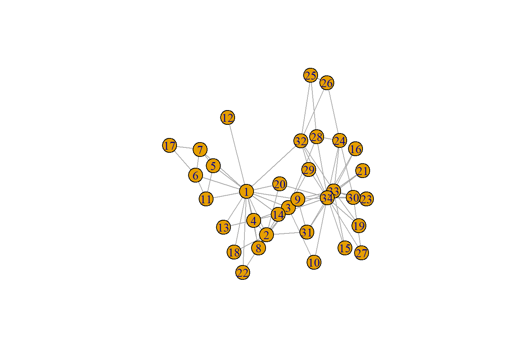
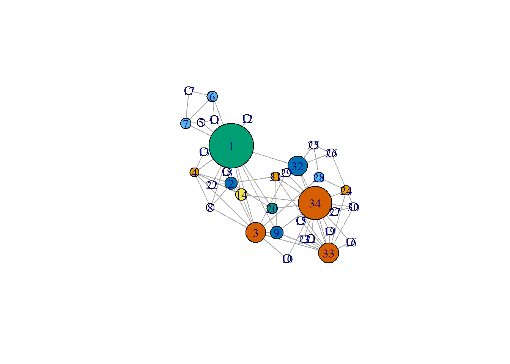
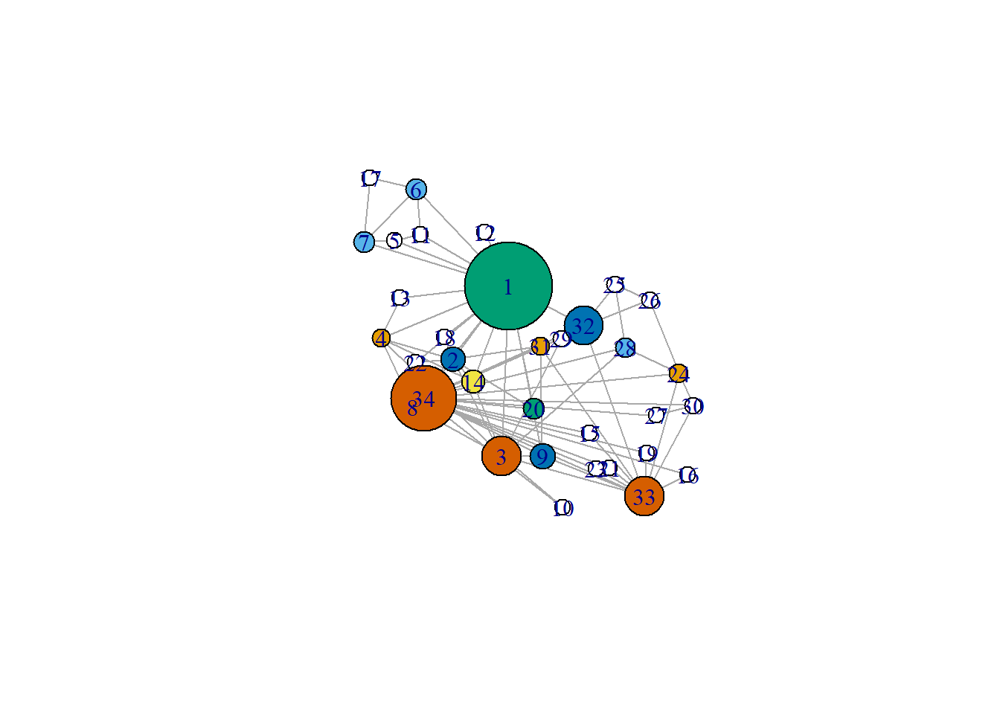

lab4_visu
2026-09-21
1 Visualisation dudalling
library(igraph)
g <- make_graph("Zachary")
plot(g)
2 EDA
2.1 Node charactersists
gmat <- as_adjacency_matrix(g, type = "both", sparse = FALSE)
# directed?
isSymmetric.matrix(gmat)## [1] TRUE# Size
# number of nodes
vcount(g)## [1] 34# number of edges
ecount(g)## [1] 78par(mfrow = c(2, 2))
# plot 1: degree distribution
hist(table(igraph::degree(g)), xlab='in-degree', main= 'Histogram of in-degree')
# plot 2: alle mogelijke trihoekjes
trans = igraph::transitivity(g, type = c("localundirected"), isolates = c("NaN", "zero"))
hist(trans, xlab='Transitivity', main= 'Histogram of transitivity')
# plot 3: betweenness
between = igraph::betweenness(g, directed = FALSE, normalized = T)
hist(trans, xlab='Betweenness', main= 'Histogram of Normalised betweenness')
# plot 4: network
V(g)$size <- igraph::betweenness(g, directed = FALSE, normalized = T) * 100 + 10
V(g)$color <- igraph::betweenness(g, directed = FALSE, normalized = T) * 100
layout = layout_with_mds(g, dim=2)
plot(g, layout=layout)
title("Network visualisation") # Edge characteristics
# Edge characteristics
igraph::dyad_census(g)## Warning: `dyad_census()` requires a directed graph.## $mut
## [1] 78
##
## $asym
## [1] 0
##
## $null
## [1] 483igraph::triad_census(g)## Warning in triad_census_impl(graph = graph): Triad census called on an undirected graph. All connections will be treated as mutual.
## Source: misc/motifs.c:1157## [1] 3971 0 1575 0 0 0 0 0 0 0 393 0 0 0 0 45# I will use sna because it shows the names of the triads as well.
sna::triad.census(gmat)## 003 012 102 021D 021U 021C 111D 111U 030T 030C 201 120D 120U 120C 210 300
## [1,] 3971 0 1575 0 0 0 0 0 0 0 393 0 0 0 0 45unloadNamespace("sna")
igraph::transitivity(g, type = "global")## [1] 0.256sna::gtrans(gmat)## [1] 0.256triad_g <- data.frame(sna::triad.census(gmat))
transitivity_g <- (3 * triad_g$X300)/(triad_g$X201 + 3 * triad_g$X300)
transitivity_g## [1] 0.256set.seed(2345)
l <- layout_with_dh(g) #https://igraph.org/r/doc/layout_with_mds.html
plot(g, layout = l)
l #let us take a look at the coordinates## [,1] [,2]
## [1,] -0.817 5.4011
## [2,] -0.879 0.8957
## [3,] 3.430 -5.0398
## [4,] -7.230 2.1823
## [5,] -6.045 8.1675
## [6,] -4.092 11.3319
## [7,] -8.740 8.0888
## [8,] -4.427 -2.0488
## [9,] 6.994 -5.0413
## [10,] 8.773 -8.1824
## [11,] -3.741 8.5449
## [12,] 1.913 8.6728
## [13,] -5.548 4.6515
## [14,] 0.896 -0.4920
## [15,] 11.148 -3.6589
## [16,] 19.758 -6.2099
## [17,] -8.214 12.0062
## [18,] -1.652 2.2368
## [19,] 16.154 -4.8668
## [20,] 6.214 -2.1504
## [21,] 12.942 -5.7943
## [22,] -4.190 0.6905
## [23,] 11.713 -5.8146
## [24,] 19.032 0.0254
## [25,] 13.396 5.4797
## [26,] 16.451 4.5099
## [27,] 17.015 -2.5625
## [28,] 14.286 1.6026
## [29,] 8.628 2.1711
## [30,] 20.266 -1.9373
## [31,] 6.817 1.6830
## [32,] 10.641 2.9637
## [33,] 15.995 -7.5035
## [34,] 13.656 -1.4905l[1, 1] <- 4
l[34, 1] <- -3.5
plot(g, layout = l)
LS0tDQp0aXRsZTogImxhYjRfdmlzdSINCm91dHB1dDogaHRtbF9kb2N1bWVudA0KZGF0ZTogIjIwMjYtMDktMjEiDQotLS0NCg0KYGBge3Igc2V0dXAsIGluY2x1ZGU9RkFMU0V9DQprbml0cjo6b3B0c19jaHVuayRzZXQoZWNobyA9IFRSVUUpDQpgYGANCg0KIyMgVmlzdWFsaXNhdGlvbiBkdWRhbGxpbmcNCg0KYGBge3IgbG9hZH0NCmxpYnJhcnkoaWdyYXBoKQ0KZyA8LSBtYWtlX2dyYXBoKCJaYWNoYXJ5IikNCnBsb3QoZykNCmBgYA0KDQojIyBFREENCiMjIyBOb2RlIGNoYXJhY3RlcnNpc3RzDQoNCmBgYHtyIEVEQSBub2RlIGNoYXJhY3RlcnNpc3RzfQ0KZ21hdCA8LSBhc19hZGphY2VuY3lfbWF0cml4KGcsIHR5cGUgPSAiYm90aCIsIHNwYXJzZSA9IEZBTFNFKQ0KDQojIGRpcmVjdGVkPw0KaXNTeW1tZXRyaWMubWF0cml4KGdtYXQpDQoNCiMgU2l6ZQ0KIyBudW1iZXIgb2Ygbm9kZXMNCnZjb3VudChnKQ0KIyBudW1iZXIgb2YgZWRnZXMNCmVjb3VudChnKQ0KDQpwYXIobWZyb3cgPSBjKDIsIDIpKQ0KDQojIHBsb3QgMTogZGVncmVlIGRpc3RyaWJ1dGlvbg0KaGlzdCh0YWJsZShpZ3JhcGg6OmRlZ3JlZShnKSksIHhsYWI9J2luLWRlZ3JlZScsIG1haW49ICdIaXN0b2dyYW0gb2YgaW4tZGVncmVlJykNCg0KDQojIHBsb3QgMjogYWxsZSBtb2dlbGlqa2UgdHJpaG9la2plcw0KdHJhbnMgPSBpZ3JhcGg6OnRyYW5zaXRpdml0eShnLCB0eXBlID0gYygibG9jYWx1bmRpcmVjdGVkIiksIGlzb2xhdGVzID0gYygiTmFOIiwgInplcm8iKSkNCmhpc3QodHJhbnMsIHhsYWI9J1RyYW5zaXRpdml0eScsIG1haW49ICdIaXN0b2dyYW0gb2YgdHJhbnNpdGl2aXR5JykNCg0KIyBwbG90IDM6IGJldHdlZW5uZXNzDQpiZXR3ZWVuID0gaWdyYXBoOjpiZXR3ZWVubmVzcyhnLCBkaXJlY3RlZCA9IEZBTFNFLCBub3JtYWxpemVkID0gVCkNCmhpc3QodHJhbnMsIHhsYWI9J0JldHdlZW5uZXNzJywgbWFpbj0gJ0hpc3RvZ3JhbSBvZiBOb3JtYWxpc2VkIGJldHdlZW5uZXNzJykNCg0KIyBwbG90IDQ6IG5ldHdvcmsNClYoZykkc2l6ZSA8LSBpZ3JhcGg6OmJldHdlZW5uZXNzKGcsIGRpcmVjdGVkID0gRkFMU0UsIG5vcm1hbGl6ZWQgPSBUKSAqIDEwMCArIDEwDQpWKGcpJGNvbG9yIDwtIGlncmFwaDo6YmV0d2Vlbm5lc3MoZywgZGlyZWN0ZWQgPSBGQUxTRSwgbm9ybWFsaXplZCA9IFQpICogMTAwDQpsYXlvdXQgPSBsYXlvdXRfd2l0aF9tZHMoZywgZGltPTIpDQoNCnBsb3QoZywgbGF5b3V0PWxheW91dCkNCnRpdGxlKCJOZXR3b3JrIHZpc3VhbGlzYXRpb24iKQ0KYGBgDQojIEVkZ2UgY2hhcmFjdGVyaXN0aWNzDQoNCmBgYHtyIGVkZ2VzfQ0KaWdyYXBoOjpkeWFkX2NlbnN1cyhnKQ0KDQppZ3JhcGg6OnRyaWFkX2NlbnN1cyhnKQ0KDQojIEkgd2lsbCB1c2Ugc25hIGJlY2F1c2UgaXQgc2hvd3MgdGhlIG5hbWVzIG9mIHRoZSB0cmlhZHMgYXMgd2VsbC4NCnNuYTo6dHJpYWQuY2Vuc3VzKGdtYXQpDQp1bmxvYWROYW1lc3BhY2UoInNuYSIpICANCg0KaWdyYXBoOjp0cmFuc2l0aXZpdHkoZywgdHlwZSA9ICJnbG9iYWwiKQ0Kc25hOjpndHJhbnMoZ21hdCkNCg0KdHJpYWRfZyA8LSBkYXRhLmZyYW1lKHNuYTo6dHJpYWQuY2Vuc3VzKGdtYXQpKQ0KDQoNCnRyYW5zaXRpdml0eV9nIDwtICgzICogdHJpYWRfZyRYMzAwKS8odHJpYWRfZyRYMjAxICsgMyAqIHRyaWFkX2ckWDMwMCkNCnRyYW5zaXRpdml0eV9nDQoNCg0KDQpgYGANCg0KYGBge3IgbGF5b3V0fQ0Kc2V0LnNlZWQoMjM0NSkNCmwgPC0gbGF5b3V0X3dpdGhfZGgoZykgICNodHRwczovL2lncmFwaC5vcmcvci9kb2MvbGF5b3V0X3dpdGhfbWRzLmh0bWwNCnBsb3QoZywgbGF5b3V0ID0gbCkNCg0KbCAgI2xldCB1cyB0YWtlIGEgbG9vayBhdCB0aGUgY29vcmRpbmF0ZXMNCmxbMSwgMV0gPC0gNA0KbFszNCwgMV0gPC0gLTMuNQ0KcGxvdChnLCBsYXlvdXQgPSBsKQ0KDQoNCmBgYA0KDQo=